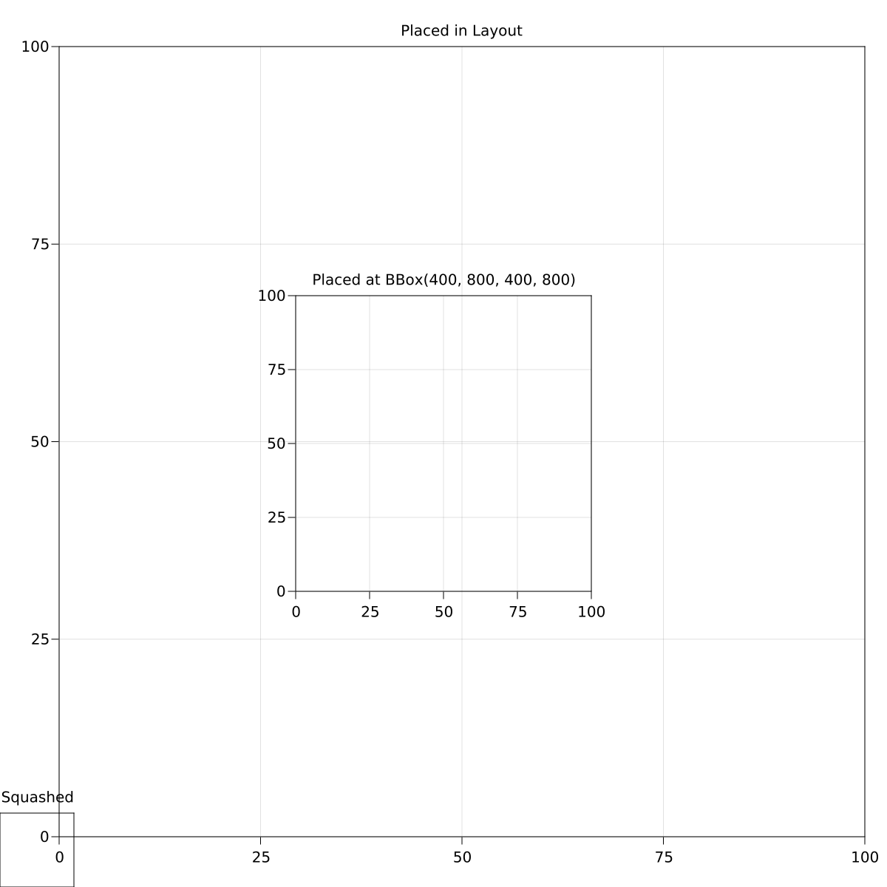
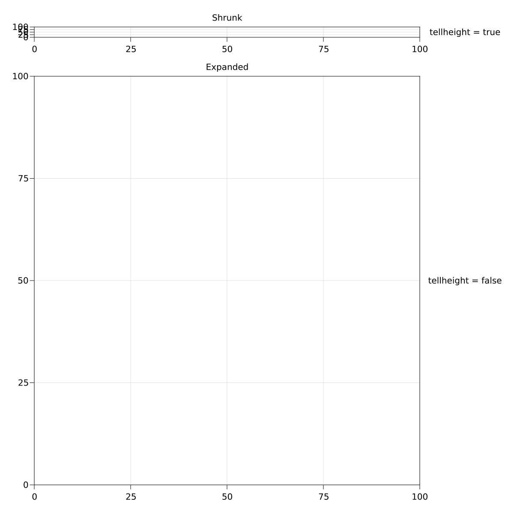

Frequently Asked Questions
Installation Issues
We assume you are running Julia on the default system image without PackageCompiler.
No Scene displayed or GLMakie fails to build
If Makie builds, but when plotting no window or plot is displayed, your backend may not have built correctly. By default, Makie will try to use GLMakie as a backend, but if it does not build correctly for whatever reason, then scenes will not be displayed. Ensure that your graphics card supports OpenGL; if it does not (old models, or relatively old integrated graphics cards), then you may want to consider CairoMakie.
Plotting issues
Dimensions too large
In general, plotting functions tend to plot whatever's given to them as a single texture. This can lead to GL errors, or OpenGL failing silently. To circumvent this, one can 'tile' the plots (i.e., assemble them piece-by-piece) to decrease the individual texture size.
2d plots (heatmaps, images, etc.)
heatmap(rand(Float32, 24900, 26620))may either fail with an error
Error showing value of type Scene:
ERROR: glTexImage 2D: width too large. Width: 24900
[...]or fail silently:

Tiling the plot, as shown below, yields a correct image.
sc = Scene()
data = rand(Float32, 24900, 26620)
heatmap!(sc, 1:size(data, 1)÷2, 1:size(data, 2)÷2, data[1:end÷2, 1:end÷2])
heatmap!(sc, (size(data, 1)÷2 + 1):size(data, 1), 1:size(data, 2)÷2, data[(end÷2 + 1):end, 1:end÷2])
heatmap!(sc, 1:size(data, 1)÷2, (size(data, 2)÷2 + 1):size(data, 2), data[1:end÷2, (end÷2 + 1):end])
heatmap!(sc, (size(data, 1)÷2 + 1):size(data, 1), (size(data, 2)÷2 + 1):size(data, 2),
data[(end÷2 + 1):end, (end÷2 + 1):end])
3d plots (volumes)
The approach here is similar to that for the 2d plots, except that here there is a helpful function that gives the maximum texture size. You can check the maximum texture size with:
using Makie, GLMakie, ModernGL
# simple plot to open a window (needs to be open for opengl)
display(scatter(rand(10)))
glGetIntegerv(GL_MAX_3D_TEXTURE_SIZE)and then just split the volume:
vol = rand(506, 720, 1440)
ranges = (1:256, 1:256, 1:256)
scene = volume(ranges..., vol[ranges...])
for i in 1:3
global ranges
ranges = ntuple(3) do j
s = j == i ? last(ranges[j]) : 1
e = j == i ? size(vol, j) : last(ranges[j])
s:e
end
volume!(ranges..., vol[ranges...])
end
sceneGeneral issues
My font doesn't work!
If Makie can't find your font, you can do two things:
Check that the name matches and that the font is in one of the directories in:
using FreeTypeAbstraction; FreeTypeAbstraction.valid_fontpaths
You can add a custom font path via the environment variable:
ENV["FREETYPE_ABSTRACTION_FONT_PATH"] = "/path/to/your/fonts"
Specify the path to the font; instead of
font = "Noto", you could writejoindir(homedir(), "Noto.ttf")or something.
Layout Issues
Elements are squashed into the lower left corner
Layoutable elements require a bounding box that they align themselves to. If you place such an element in a layout, the bounding box is controlled by that layout. If you forget to put an element in a layout, it will have its default bounding box of BBox(0, 100, 0, 100) which ends up being in the lower left corner. You can also choose to specify a bounding box manually if you need more control.
using CairoMakie
scene, layout = layoutscene(resolution = (1200, 1200))
ax1 = Axis(scene, title = "Squashed")
ax2 = layout[1, 1] = Axis(scene, title = "Placed in Layout")
ax3 = Axis(scene, bbox = BBox(400, 800, 400, 800),
title = "Placed at BBox(400, 800, 400, 800)")
Columns or rows are shrunk to the size of Text or another element
Columns or rows that have size Auto(true) try to determine the width or height of all single-spanned elements that are placed in them, and if any elements report their size the row or column will shrink to the maximum reported size. This is so smaller elements with a known size take as little space as needed. But if there is other content in the row that should take more space, you can give the offending element the attribute tellheight = false or tellwidth = false. This way, its own size can be determined automatically, but it doesn't report it to the row or column of the layout. Alternatively, you can set the size of that row or column to Auto(false) (or any other value than Auto(true)).
using CairoMakie
scene, layout = layoutscene(resolution = (1200, 1200))
layout[1, 1] = Axis(scene, title = "Shrunk")
layout[2, 1] = Axis(scene, title = "Expanded")
layout[1, 2] = Label(scene, "tellheight = true", tellheight = true)
layout[2, 2] = Label(scene, "tellheight = false", tellheight = false)